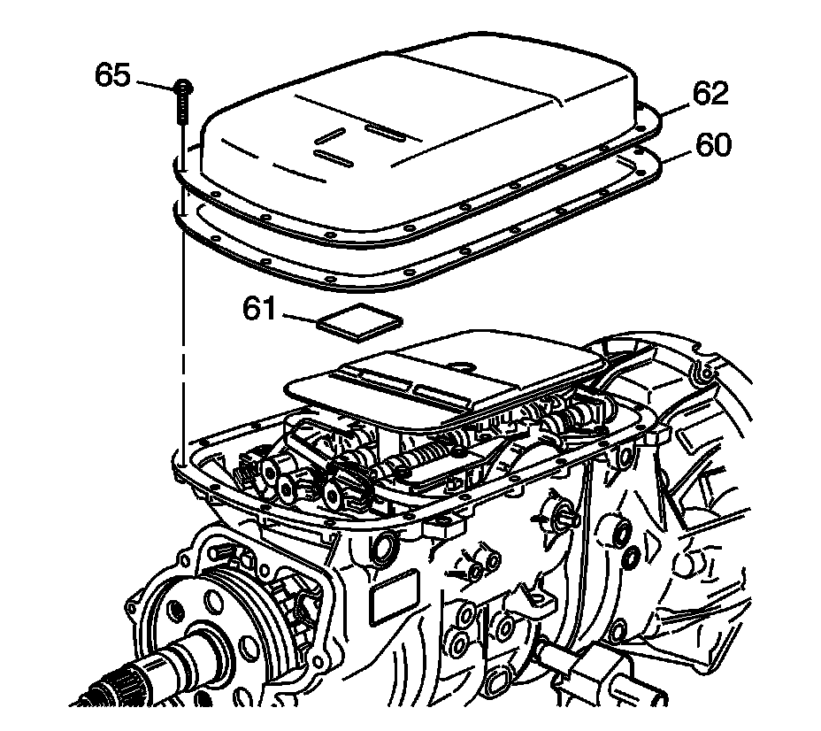
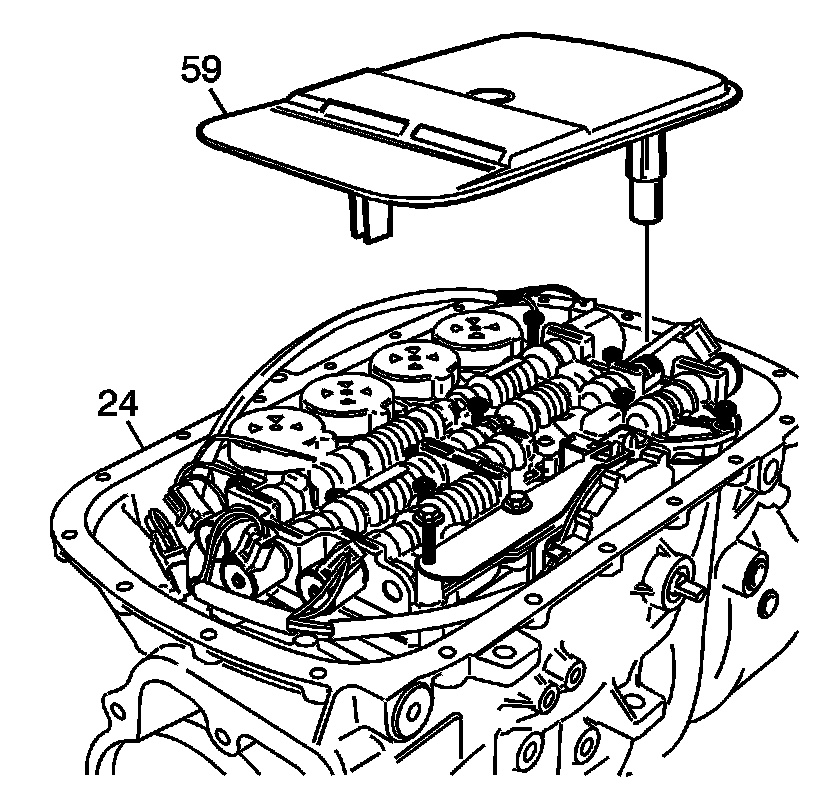
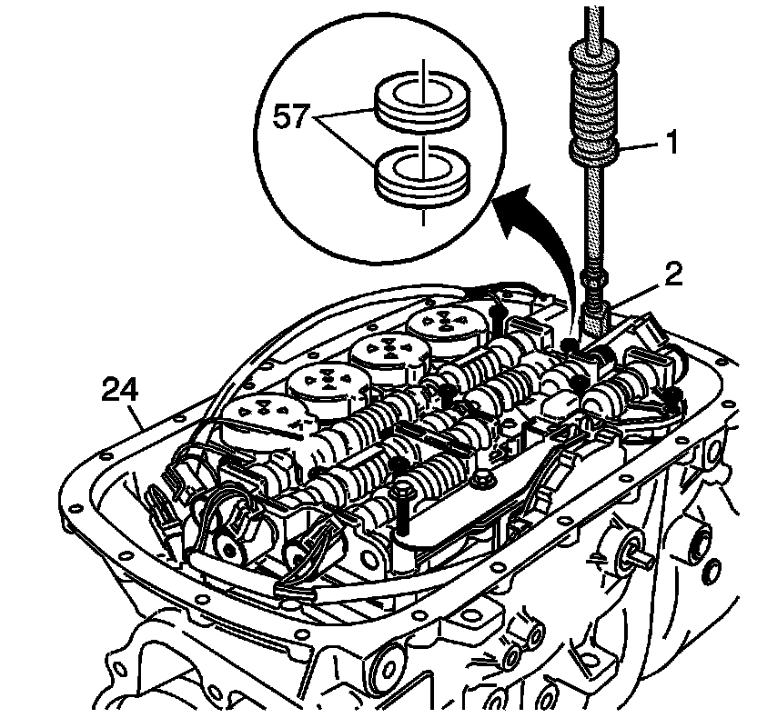

Transmission Fluid Pan and Filter Assembly Removal
Transmission Fluid Pan and Filter Assembly Removal
Tools Required
* J 23129 Universal Seal Remover
* J 6125-1B Slide Hammer Adapter

1. Rotate the transmission so that the fluid pan (62) is facing up.
2. Remove the fluid pan bolts (65), the fluid pan (62) and the gasket (60).

Important: Fluid seals (57) may remain in case (24) after fluid filter (59) has been removed.
3. Remove the fluid filter (59) from the case (24).

4. Assemble J 23129 and J 6125-1B to remove the fluid filter seals (57) from the case (24).